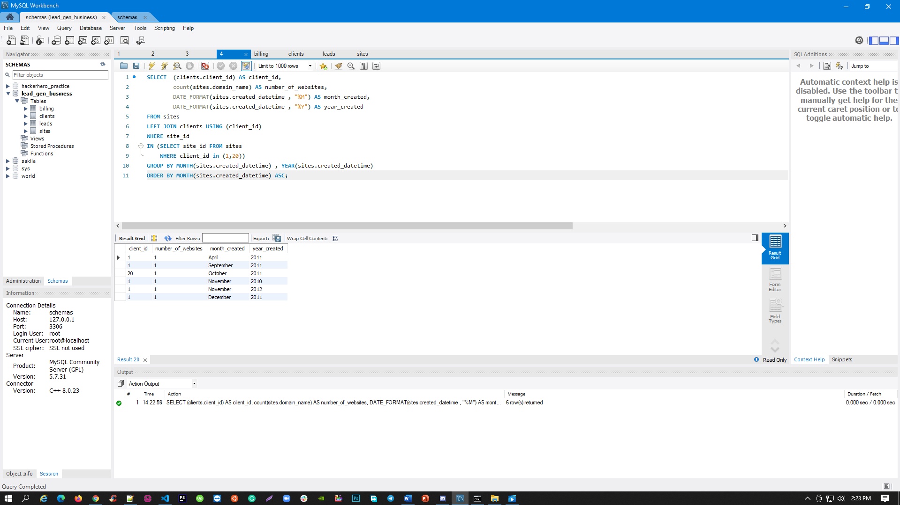

Queries
- What query would you run to get the total revenue for March of 2012?

- What query would you run to get total revenue collected from the client with an id of 2?

- What query would you run to get all the sites that client=10 owns?

- What query would you run to get total # of sites created per month per year for the client with an id of 1? What about
for client=20?

- What query would you run to get the total # of leads generated for each of the sites between January 1, 2011 to February
15, 2011?

- What query would you run to get a list of client names and the total # of leads we've generated for each of our clients
between January 1, 2011 to December 31, 2011?

- What query would you run to get a list of client names and the total # of leads we've generated for each client each
month between months 1 - 6 of Year 2011?

- What query would you run to get a list of client names and the total # of leads we've generated for each of our clients'
sites between January 1, 2011 to December 31, 2011? Order this query by client id.
 Come up with a second query that
shows all the clients, the site name(s), and the total number of leads generated from each site for all time.
Come up with a second query that
shows all the clients, the site name(s), and the total number of leads generated from each site for all time.

- Write a single query that retrieves total revenue collected from each client for each month of the year. Order it by
client id.

- Write a single query that retrieves all the sites that each client owns. Group the results so that each row shows a new
client. It will become clearer when you add a new field called 'sites' that has all the sites that the client owns.
(HINT: use GROUP_CONCAT)